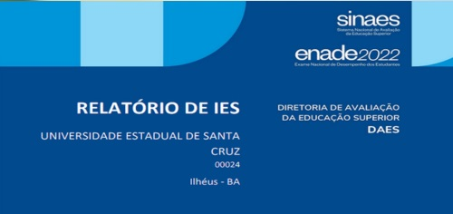

Centros e grupos de pesquisa
Internacional
Laboratórios
Mapa da cidade
Núcleos
Projetos
Reeleito, reitor da UESC agradece
Confiança na comunidade acadêmicaProfessor da UESC ministra curso no Rio Grande do Sul
Detalhes sobre o curso no Rio Grande do SulAutor das ameaças à UESC é aprendido
Desfecho da investigação
